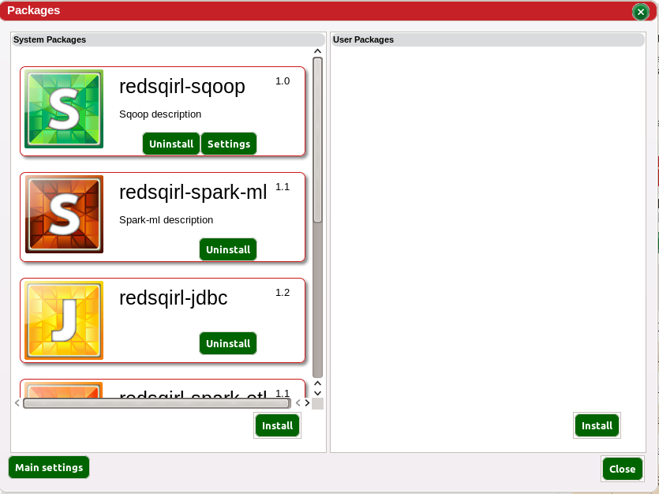
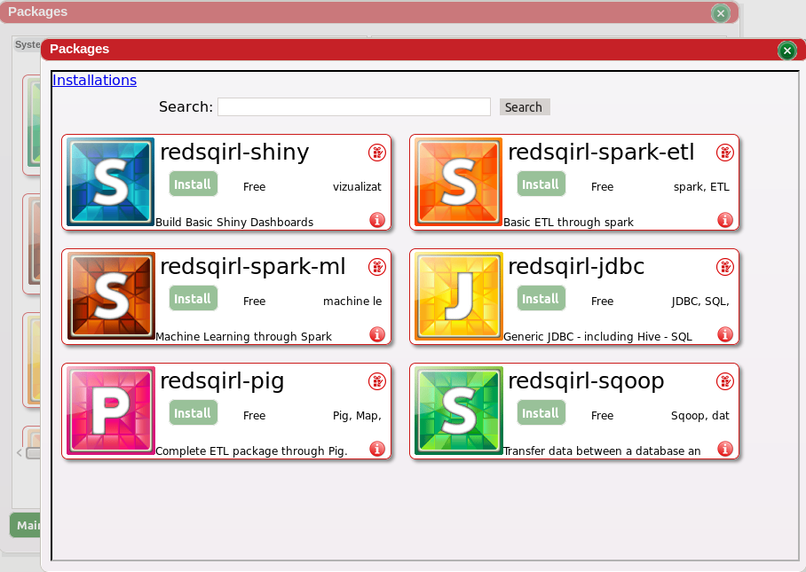
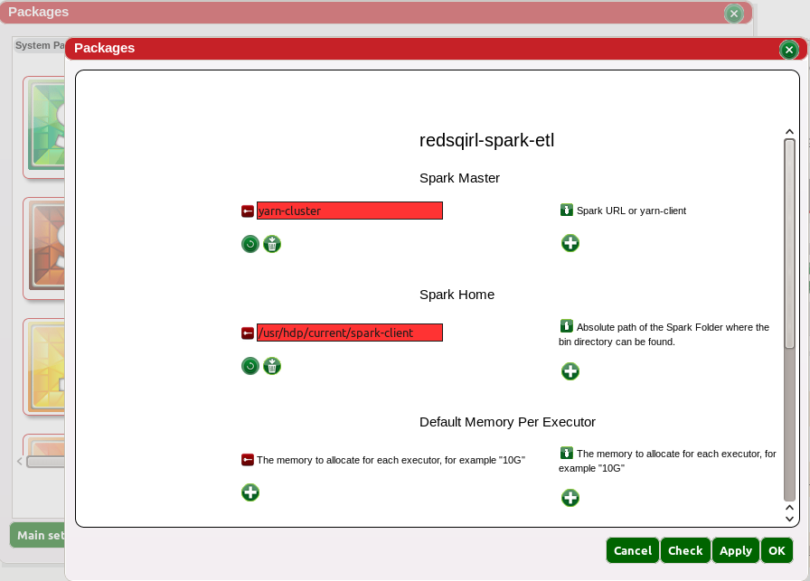

The package view gathers all the packages installed on the user’s Red Sqirl instance.
Packages are group of actions used to perform specific processes in Red Sqirl. Packages generally run on the same platform e.g. Pig, Hive.
Two scopes of package installation exist
The user scope packages overwrite system ones when there is a conflict. For example if Red Sqirl Pig version 1 is installed on the System scope and the user 'john' has installed version 2 on its user scope. Version 1 will be used for every user but 'john' who will use version 2.
In order to install system packages, the user needs to be an administrator and therefore be in the required setting. To install user packages, the user package setting should be set to true.
If the user’s web server can reach the Red Sqirl Marketplace, the user can easily install a new functionality.
A package may comes with its own settings. The user can access the settings through view. Settings can also have two scopes independent of the scope of the package. User scope can overwrite the system scope. If the user wants to know more about settings, the user can refer to the setting page.
